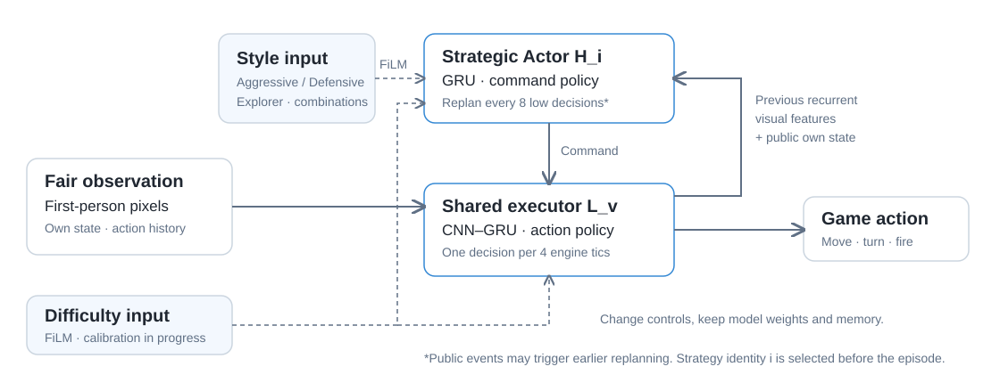
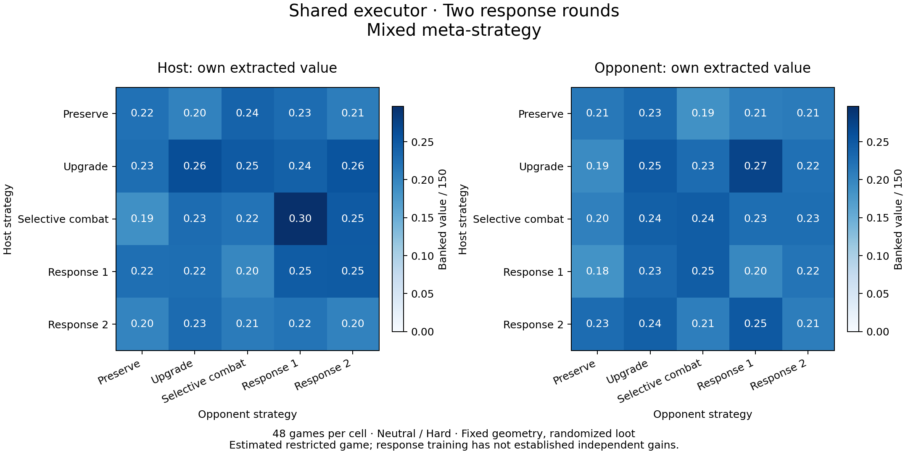

Live controls
One policy, changing style and difficulty
Change preference→replan→retain memory
One policy, changing style and difficulty
Change preference→replan→retain memory

Engage, eliminate threat, continue looting
Engage→kill→search loot→extract

Prefer extraction after acquiring value
Acquire loot→seek extraction→bank value

Continue useful search before extraction
Search→three pickups→extract
Selected first-person case studies, not average-performance samples. All four clips use the same curriculum high Actor, anchored executor and frozen opponent. Static styles use Hard; Live controls changes both inputs without swapping weights. The Aggressive clip clarifies that 30 is initial ammunition, not capacity. Viewer-only enemy telemetry is not an Actor input. Clip identities and actual events.
01 · SCENARIO
Search for randomized loot, choose whether to fight, and extract your own value. Killing the opponent is never required to leave.

02 · METHOD
A low-frequency strategic Actor chooses goals. A shared visual CNN–GRU executor translates them into movement and combat actions.

The high Actor chooses search regions, engage/disengage, or either exit. It replans every eight low decisions, with earlier public-event replanning; the executor acts every four engine tics. Style is injected through bounded FiLM. Switching style preserves recurrent memory and does not swap checkpoints.
Privileged state supplies training supervision and Critic targets only. Deployment uses first-person pixels, public own state and recurrent history. The showcased conditional high Actor is distilled from strategic policies and explicit preference priors; it is not evidence of an unconstrained best response.
03 · STYLES
Watch the first-person policy, not the opponent. Read applied preference, selected command and observed outcome as separate signals.
Aggressive receives proactive combat demonstrations; Defensive favors securing carried value; Explorer favors continued search. Static cases illustrate these preferences, while the live-control clip shows one running policy receiving new inputs. The three static styles use Hard. The live clip changes both controls; aggregate difficulty evidence and its limits appear below.
Request → apply → act → extract
Acquire 50 value→change controls→extract
This earlier diagnostic uses a previous high Actor with a Hard-anchored executor; it is not the four-grid candidate. Neither checkpoint is swapped during play. Requested and applied controls are shown separately. In 12 switching diagnostics, changed styles applied within 0.8s and low difficulty applied at the next decision. This demonstrates runtime control, not a benefit from switching: the difficulty response is not yet reliably monotonic.
04 · RESULTS
Real-time controls, distinct learned preferences, and a measured task-value gradient.
Same-model difficulty: full-task validation. One frozen hierarchical policy, three difficulty inputs, 64 games per level across eight development layouts, both roles and Neutral/Aggressive/Defensive/Explorer.
Aggregate banked value increases, with positive adjacent-level differences under paired layout bootstrap. Named-style command tendencies remain distinct. This is development evidence, not universal calibration: per-style returns are not all ordered, and extraction including empty-handed exits is 90.63% / 90.63% / 87.50%. Full counts, style breakdowns and intervals.
Controls in action. Pickup → change style and difficulty → extract 60 value (32.8s). Random-segment PPO keeps the executor frozen and recurrent memory intact. This is the selected candidate after style and difficulty training; the later joint-trained candidate was not selected. Recorded identities and events · Training-stage selection evidence.
Style changes affect behavior. Six style orders, the same deployment weights and Hard difficulty: 96 episodes over eight development layouts and both roles. The first post-switch window (decisions 88–160) avoids comparing early combat with late extraction.
Case-averaged behavior, not kill or extraction success rates. Repeated orders are not independent samples; matched seeds do not reproduce identical pre-switch trajectories. Later windows also include carryover and early episode endings. These are development diagnostics, not strict causal replay or proof of better returns. All phases, outcomes and source hashes.
The four-grid videos share an opponent protocol, but are selected cases with different seeds and roles—not matched performance comparisons or proof that switching improves outcomes. PSRO response training and executor-update experiments are implemented; reliable response gains and formal executor promotion were not established.

32 games per method across eight separate layouts, both roles and two repeats; each method faces the same sampled uniform-population opponents. All paired 95% layout-bootstrap payoff-difference intervals include zero. This comparison does not establish a reliable gain from meta-strategy selection.
Changing the shared executor changes the game: all payoff cells were recomputed. The resulting restricted-game solution mixes strategies, with measured matrix regret zero. Across 200 layout-cluster bootstrap resamples, mixture weights vary substantially; the point solution is not a stable population ranking. Independent response validation did not establish a gain, and this is not a claim of global Nash convergence. Executor command-retention checks were mixed, so the new version remains a research candidate.
A 25k-decision task fine-tune changed mean banked value from 29.22 to 38.44 and positive-bank episodes from 29 to 31 in a paired 32-game, four-layout development screen. The executor stayed frozen with a distilled high-Actor KL reference; this is not generalization evidence.
Two pickups → live preference changes → extract 75 value (32.8s). This earlier candidate uses a different high Actor from the first four clips and the original Hard executor. Four switching diagnostics completed extraction; 12 style changes applied within 0.8s. Evidence and identities.